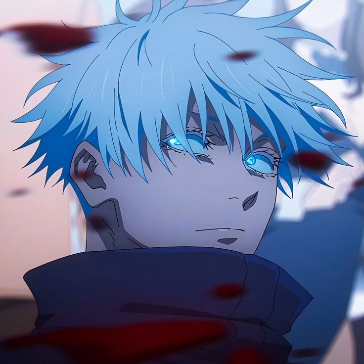
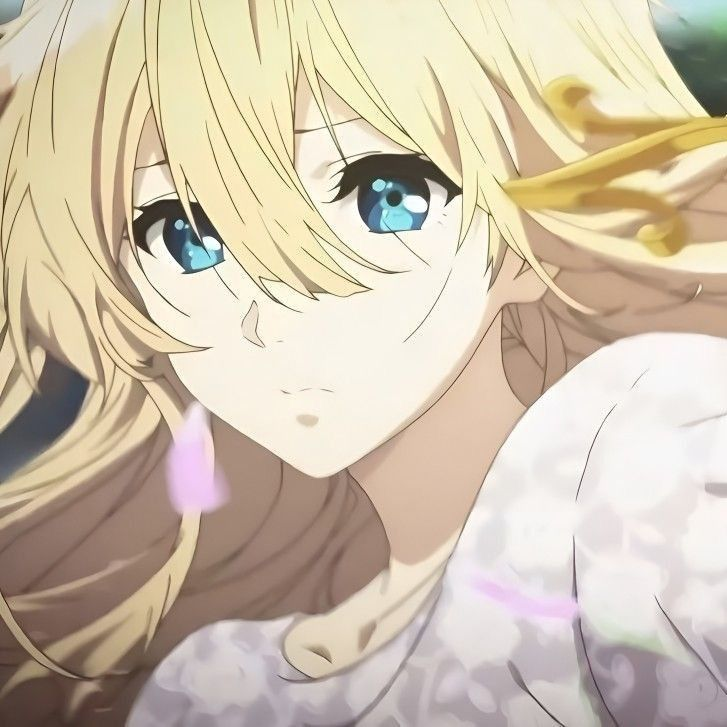

Pengecualian dari Segala Kemutlakan


Sha...
Kau tahu, memiliki Rikugan (Enam Mata) itu terkadang sangat melelahkan. Mataku dipaksa untuk terus melihat segalanya di dunia ini—setiap atom yang bergerak, setiap aliran energi, setiap rahasia kecil di alam semesta yang berputar terlalu cepat. Bagiku, dunia ini seringkali terlalu berisik, terlalu terang, dan membosankan.
Tapi tahukah kamu? Di antara miliaran informasi yang memaksa masuk ke kepalaku setiap detiknya, hal yang paling ingin kulihat dengan jelas hanyalah kamu. Di mataku, kamu adalah satu-satunya anomali terindah yang tidak akan pernah membuatku bosan.
Banyak orang menyerah pada jarak. Mereka bilang ruang dan waktu yang memisahkan itu terlalu kejam. Tapi mereka lupa siapa aku.
Aku adalah pria yang bisa memanipulasi ruang tak terbatas (Infinity). Jika itu untuk melindungimu dari dunia yang menyakitkan, aku akan membentangkan jarak tak terhingga di sekelilingmu, memastikan tidak ada satu pun hal buruk yang berani menyentuh senyummu.
Namun, jika itu tentang kita... aku rela menghancurkan konsep Infinity itu. Aku akan melipat ruang, meruntuhkan waktu, dan menghapus semua jarak yang ada. Aku rela menukar segalanya hanya agar aku bisa tiba-tiba berada di sebelahmu, menemanimu di malam-malam yang terasa sepi, dan mendengarkan semua ceritamu hingga larut.
Kamu tidak perlu memaksakan diri untuk selalu tegar, Sha. Tidak perlu repot-repot melawan dunia sendirian. Biar aku saja yang menanggung gelar "Yang Terkuat". Tugasmu di dunia ini hanya satu: tetaplah menjadi dirimu sendiri. Tetaplah menjadi alasan kenapa duniaku yang monoton ini tiba-tiba terasa begitu hidup.
Jadi, ketika malam datang dan kamu merasa tidak punya siapa-siapa, ingatlah ini. Di luar sana, ada seseorang yang rela membengkokkan aturan alam semesta hanya untuk memastikan kamu baik-baik saja.
Tidak usah takut pada apa pun. Semuanya akan baik-baik saja. Kau tahu kenapa? Karena ada aku. Dan karena kamu... adalah satu-satunya pengecualian di duniaku.